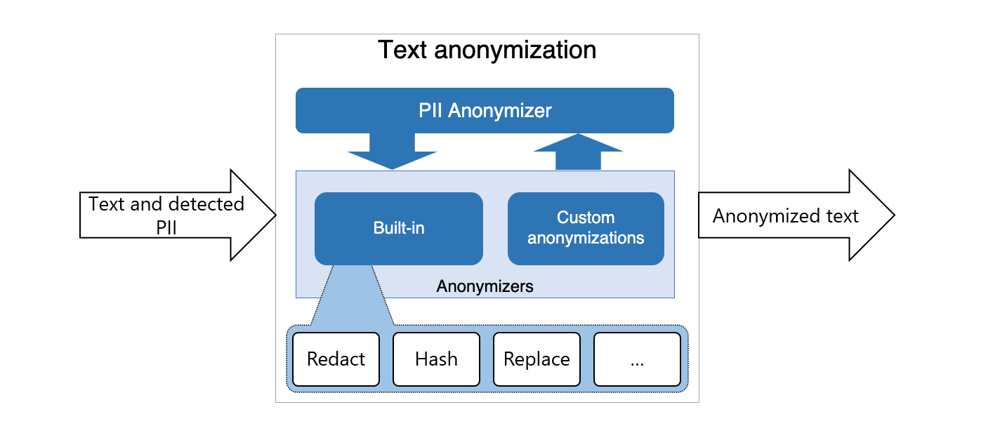

Presidio Anonymizer
The Presidio anonymizer is a Python based module for anonymizing detected PII text entities with desired values. Presidio anonymizer supports both anonymization and deanonymization by applying different operators. Operators are built-in text manipulation classes which can be easily extended.

The Presidio-Anonymizer package contains both Anonymizers and Deanonymizers.
- Anonymizers are used to replace a PII entity text with some other value by applying a certain operator (e.g. replace, mask, redact, encrypt)
- Deanonymizers are used to revert the anonymization operation. (e.g. to decrypt an encrypted text).
Installation
see Installing Presidio.
Getting started
Simple example:
from presidio_anonymizer import AnonymizerEngine
from presidio_anonymizer.entities import RecognizerResult, OperatorConfig
# Initialize the engine:
engine = AnonymizerEngine()
# Invoke the anonymize function with the text,
# analyzer results (potentially coming from presidio-analyzer) and
# Operators to get the anonymization output:
result = engine.anonymize(
text="My name is Bond, James Bond",
analyzer_results=[
RecognizerResult(entity_type="PERSON", start=11, end=15, score=0.8),
RecognizerResult(entity_type="PERSON", start=17, end=27, score=0.8),
],
operators={"PERSON": OperatorConfig("replace", {"new_value": "BIP"})},
)
print(result)
This example takes the output of the AnonymizerEngine
containing an encrypted PII entity, and decrypts it back to the original text:
from presidio_anonymizer import DeanonymizeEngine
from presidio_anonymizer.entities import OperatorResult, OperatorConfig
# Initialize the engine:
engine = DeanonymizeEngine()
# Invoke the deanonymize function with the text, anonymizer results and
# Operators to define the deanonymization type.
result = engine.deanonymize(
text="My name is S184CMt9Drj7QaKQ21JTrpYzghnboTF9pn/neN8JME0=",
entities=[
OperatorResult(start=11, end=55, entity_type="PERSON"),
],
operators={"DEFAULT": OperatorConfig("decrypt", {"key": "WmZq4t7w!z%C&F)J"})},
)
print(result)
You can run presidio anonymizer as an http server using either python runtime or using a docker container.
Using docker container
cd presidio-anonymizer
docker run -p 5001:3000 presidio-anonymizer
Using python runtime
Note
This requires the Presidio Github repository to be cloned.
cd presidio-anonymizer
python app.py
Anonymize:
curl -XPOST http://localhost:3000/anonymize -H "Content-Type: application/json" -d @payload
payload example:
{
"text": "hello world, my name is Jane Doe. My number is: 034453334",
"anonymizers": {
"PHONE_NUMBER": {
"type": "mask",
"masking_char": "*",
"chars_to_mask": 4,
"from_end": true
}
},
"analyzer_results": [
{
"start": 24,
"end": 32,
"score": 0.8,
"entity_type": "NAME"
},
{
"start": 24,
"end": 28,
"score": 0.8,
"entity_type": "FIRST_NAME"
},
{
"start": 29,
"end": 32,
"score": 0.6,
"entity_type": "LAST_NAME"
},
{
"start": 48,
"end": 57,
"score": 0.95,
"entity_type": "PHONE_NUMBER"
}
]}
Deanonymize:
curl -XPOST http://localhost:3000/deanonymize -H "Content-Type: application/json" -d @payload
payload example:
{
"text": "My name is S184CMt9Drj7QaKQ21JTrpYzghnboTF9pn/neN8JME0=",
"deanonymizers": {
"PERSON": {
"type": "decrypt",
"key": "WmZq4t7w!z%C&F)J"
}
},
"anonymizer_results": [
{
"start": 11,
"end": 55,
"entity_type": "PERSON"
}
]}
Main concepts
The following class diagram shows a simplified view of the main classes in Presidio Anonymizer:
classDiagram
direction LR
class RecognizerResult {
+entity_type: str
+start: int
+end: int
+score: float
}
class AnonymizerEngine {
+anonymize(text: str, analyzer_results: List[RecognizerResult], operators: Dict[str, OperatorConfig], ...) EngineResult
+add_anonymizer(anonymizer_cls: Type[Operator]) None
+remove_anonymizer(deanonymizer_cls: Type[Operator]) None
}
class DeanonymizeEngine {
+deanonymize(text: str, entities: List[OperatorResult], operators: Dict[str, OperatorConfig]) EngineResult
+get_deanonymizers() List[str]
+add_deanonymizer(deanonymizer_cls: Type[Operator]) None
+remove_deanonymizer(deanonymizer_cls: Type[Operator]) None
}
class Operator {
+operate(text: str, params: Dict) str
}
class OperatorConfig {
+operator_name: str
+params: Dict
}
class EngineResult {
+text: str
+items: List[OperatorResult]
}
class OperatorResult {
+start: int
+end: int
+entity_type: str
+text: str
+operator: str
}
RecognizerResult <-- AnonymizerEngine
RecognizerResult <-- DeanonymizeEngine
AnonymizerEngine o-- "1..*" Operator
AnonymizerEngine --o OperatorConfig
DeanonymizeEngine o-- "1..*" Operator
DeanonymizeEngine --o OperatorConfig
EngineBase --|> DeanonymizeEngine
EngineBase --|> AnonymizerEngine
EngineResult --o OperatorResult
%% Defining styles
style Operator fill:#E6F7FF,stroke:#005BAC,stroke-width:2px
style AnonymizerEngine fill:#FFF5E6,stroke:#FFA500,stroke-width:2px
style DeanonymizeEngine fill:#FFF5E6,stroke:#FFA500,stroke-width:2px
style EngineBase fill:#FFF5E6,stroke:#FFA500,stroke-width:2px
style OperatorConfig fill:#E6FFE6,stroke:#008000,stroke-width:2px
style EngineResult fill:#FFF0F5,stroke:#FF69B4,stroke-width:2px
style OperatorResult fill:#FFF0F5,stroke:#FF69B4,stroke-width:2px
note for RecognizerResult "RecognizerResults
are the output
of the AnalyzerEngine"
- The AnonymizerEngine is the main class in Presidio that is responsible for anonymizing PII entities in text. It uses the results from the AnalyzerEngine to perform the anonymization.
- The DeanonymizerEngine is a class in Presidio that is responsible for deanonymizing text that has been anonymized by the AnonymizerEngine, given that the operation is reversible (e.g. encryption).
- An Operator is an object in Presidio that is responsible for performing the anonymization operation on a PII entity. Presidio provides several built-in operators, such as Replace, Redact, and Encrypt, and allows users to create custom operators.
- The BatchAnonymizerEngine is a class in Presidio that is responsible for anonymizing PII entities in a batch of texts. It uses the AnonymizerEngine to perform the anonymization on each text in the batch. (see more here).
Built-in operators
| Operator type | Operator name | Description | Parameters |
|---|---|---|---|
| Anonymize | replace | Replace the PII with desired value | new_value: replaces existing text with the given value.If new_value is not supplied or empty, default behavior will be: <entity_type> e.g: <PHONE_NUMBER> |
| Anonymize | redact | Remove the PII completely from text | None |
| Anonymize | hash | Hashes the PII text using salted hashing for security | hash_type: sets the type of hashing. Can be either sha256 or sha512. The default is sha256.salt: Optional salt for reproducible hashing. If not provided, a random salt is generated per entity to prevent brute-force attacks. To maintain referential integrity across records/calls, provide a consistent salt (see example below). |
| Anonymize | mask | Replace the PII with a given character | chars_to_mask: the amount of characters out of the PII that should be replaced. masking_char: the character to be replaced with. from_end: Whether to mask the PII from it's end. |
| Anonymize | encrypt | Encrypt the PII using a given key | key: a cryptographic key used for the encryption. |
| Anonymize | custom | Replace the PII with the result of the function executed on the PII | lambda: lambda to execute on the PII data. The lambda return type must be a string. |
| Anonymize | surrogate_ahds | Generate realistic, medically-appropriate surrogates using Azure Health Data Services de-identification service surrogation | endpoint: AHDS endpoint (optional, uses AHDS_ENDPOINT env var)entities: List of entities detected by analyzerinput_locale: Input locale (default: "en-US")surrogate_locale: Surrogate locale (default: "en-US")Requires: pip install presidio-anonymizer[ahds] |
| Anonymize | keep | Preserver the PII unmodified | None |
| Deanonymize | decrypt | Decrypt the encrypted PII in the text using the encryption key | key: a cryptographic key used for the encryption is also used for the decryption. |
Note
When performing anonymization, if anonymizers map is empty or "DEFAULT" key is not stated, the default anonymization operator is "replace" for all entities. The replacing value will be the entity type e.g.: <PHONE_NUMBER>
Hash operator with salt for referential integrity
BREAKING CHANGE in Hash Operator
Starting from version 2.2.361, the hash operator uses random salt by default for security.
Impact: - Hash outputs are different from previous versions - Same PII value gets different hashes across different entities and calls (unless you provide a salt) - This prevents brute-force and dictionary attacks but breaks backward compatibility
Action Required:
- If you need the same hash for the same value (referential integrity), you must explicitly provide a salt parameter
- If you're upgrading from a previous version and need to match existing hashes, this is not possible without the original salt
!!! note: Note Presidio does not store or maintain stateful sessions. For referential integrity across records or calls, users must securely manage and provide their own salt.
The hash operator uses random salt by default for maximum security, which means the same PII value will get different hashes in different entities or calls. If you need referential integrity (same values getting the same hash), you must provide a consistent salt:
import secrets
from presidio_anonymizer import AnonymizerEngine
from presidio_anonymizer.entities import RecognizerResult, OperatorConfig
# Generate a secure salt once (store this securely for reuse across calls)
salt = secrets.token_hex(32) # 64 character hex string (256 bits)
engine = AnonymizerEngine()
text = "John Doe called John Doe yesterday"
analyzer_results = [
RecognizerResult(start=0, end=8, score=0.8, entity_type="PERSON"),
RecognizerResult(start=16, end=24, score=0.8, entity_type="PERSON"),
]
# Use the same salt for all anonymizations to maintain referential integrity
result = engine.anonymize(
text,
analyzer_results,
{"DEFAULT": OperatorConfig("hash", {"salt": salt})}
)
# Both "John Doe" instances will have the same hash
print(result.text)
Security Considerations
- Discard the salt after processing: The salt should be discarded once all data is anonymized to prevent re-identification if leaked
- Store salt only if you need to process additional data later for referential integrity (increases re-identification risk)
- If you must store salt, use secure storage (e.g., key vault or secrets manager) with strict access controls
- Use a salt of at least 128 bits (16 bytes) - enforced by the operator
- Never include the salt in anonymized output
- For maximum security without referential integrity needs, omit the salt parameter to use random per-entity salts
Handling overlaps between entities
As the input text could potentially have overlapping PII entities, there are different anonymization scenarios:
- No overlap (single PII): When there is no overlap in spans of entities, Presidio Anonymizer uses a given or default anonymization operator to anonymize and replace the PII text entity.
- Full overlap of PII entity spans: When entities have overlapping substrings,
the PII with the higher score will be taken. Between PIIs with identical scores, the selection is arbitrary. - One PII is contained in another: Presidio Anonymizer will use the PII with the larger text even if it's score is lower.
-
Partial intersection: Presidio Anonymizer will anonymize each individually and will return a concatenation of the anonymized text. For example: For the text
I'm George Washington Square Park.Assuming one entity is
George Washingtonand the other isWashington State Parkand assuming we're using the default anonymizer, the result would be:I'm <PERSON><LOCATION>.
Additional examples for overlapping PII scenarios
Text:
My name is Inigo Montoya. You Killed my Father. Prepare to die. BTW my number is:
03-232323.
Results:
-
No overlaps: Assuming only
Inigois recognized as NAME:My name is <NAME> Montoya. You Killed my Father. Prepare to die. BTW my number is: 03-232323. -
Full overlap: Assuming the number is recognized as PHONE_NUMBER with score of 0.7 and as SSN with score of 0.6, the higher score would count:
My name is Inigo Montoya. You Killed my Father. Prepare to die. BTW my number is: < PHONE_NUMBER>. -
One PII is contained is another: Assuming Inigo is recognized as FIRST_NAME and Inigo Montoya was recognized as NAME, the larger one will be used:
My name is <NAME>. You Killed my Father. Prepare to die. BTW my number is: 03-232323. -
Partial intersection: Assuming the number 03-2323 is recognized as a PHONE_NUMBER but 232323 is recognized as SSN:
My name is Inigo Montoya. You Killed my Father. Prepare to die. BTW my number is: < PHONE_NUMBER><SSN>.
Creating a new operator
Presidio anonymizer can be easily extended to support additional operators. See this tutorial on adding new operators for more information.
API reference
Follow the API Spec for the Anonymizer REST API reference details and Anonymizer Python API for Python API reference.